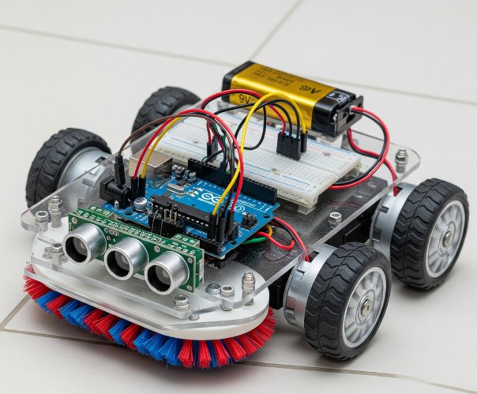
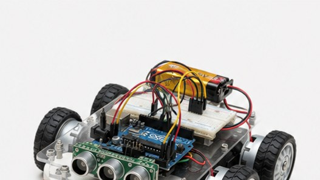
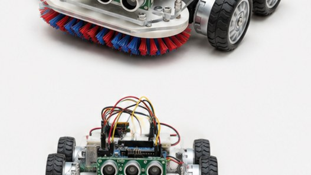
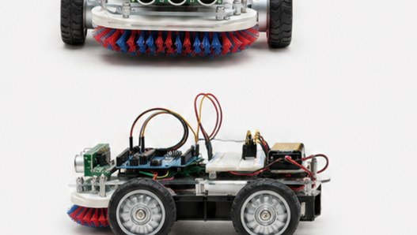
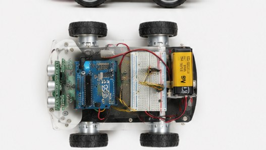
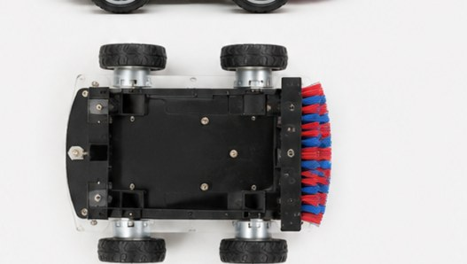
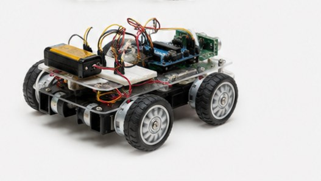

Deslocamento
Navegação contínua que acompanha o ambiente e encontra o caminho mais eficiente.
Movimento precisoPrototipagem autônoma · 01
O CleanBot percebe, decide e cuida. Um sistema de limpeza robótica criado para se mover com precisão pelo cotidiano.
Role para explorar/ 001—007
Capacidades essenciais
Quatro sistemas atuam em sintonia para transformar ambientes em rotas limpas, seguras e eficientes.
Navegação contínua que acompanha o ambiente e encontra o caminho mais eficiente.
Movimento precisoUma rotina de limpeza inteligente que age de forma consistente em cada percurso.
Ciclo otimizadoLeitura espacial para reconhecer áreas, organizar trajetos e ampliar a cobertura.
Ambiente compreendidoEvolução de software planejada para manter o sistema preparado para novos desafios.
Inteligência em evoluçãoVisão do sistema
O CleanBot converte a leitura do ambiente em decisões claras: identifica a posição, constrói uma rota e executa o ciclo de limpeza sem perder o contexto.
Do conceito ao hardware
Chassi 4WD, ponte H, sensor ultrassônico triplo e escovas duplas: a primeira unidade física do CleanBot, montada e testada em bancada.







Metodologia do projeto
O desenvolvimento combina entregas progressivas, ciclos de refinamento e validação antecipada das interfaces para reduzir riscos e acelerar a evolução do CleanBot.
Em vez de tentar fazer tudo de uma vez, o projeto é entregue em pedaços funcionais: primeiro o robô anda e aspira; depois aprende a mapear; por fim ganha o controle no app.
Ajustar a lógica de desvio de obstáculos e leitura de sensores exige repetição e refinamento a cada ciclo de testes.
Validar as telas no Figma antes de codificar a comunicação mobile economiza tempo de desenvolvimento.
Pessoas por trás do protótipo
Gestor/Líder
Mantém o projeto no trilho, cuida dos prazos, alinha o escopo e ajuda a destravar impedimentos do grupo.
Requisitos
Traduz o que o robô precisa fazer em regras claras e sem ambiguidades para o time técnico.
UI/UX e Design
Desenham como o usuário vai interagir com o app no dia a dia: telas, botões e visual no Figma.
Desenvolvimento
Coloca a mão no código para controlar os motores, ler sensores e integrar o sistema.
Testes e Qualidade
Encontram falhas no app e no robô antes que virem problemas reais.
Implementação e DevOps
Cuidam de organizar o repositório, automatizar compilações e garantir que tudo suba redondo no ambiente final.
Sobre o projeto
CleanBot é um protótipo de sistema inteligente de limpeza robótica. Ele une deslocamento autônomo, mapeamento do ambiente, ciclos de limpeza e atualizações de software em uma experiência simples, confiável e preparada para evoluir.